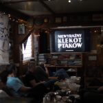
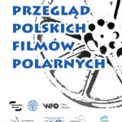
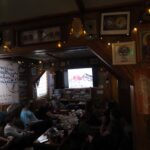
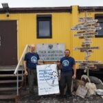
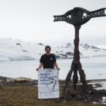

26.12.2025 odbyła się kolejna odsłona „Przeglądu Polskich Filmów Polarnych”. Tym razem prezentowaliśmy filmy w Polskiej Stacji Antarktycznej im Henryka Arctowskiego w Szetlandach Południowych. Cykl spotkań z archiwalnymi filmami polarnymi w ramach „przeglądu” będzie odbywał się do kwietnia 2026 roku w wybranych placówkach podmiotów zrzeszonych w Polskim Konsorcjum Polarnym oraz w kinie Kosmos w Katowicach.
Przegląd Polskich Filmów Polarnych powstał w ramach statutowej działalności Polskiego Klubu Polarnego, aby propagować działania Polaków w rejonach okołobiegunowych. Między różnymi innymi projektami organizatorzy zamierzają ratować od zapomnienia stare taśmy filmowe – również te amatorskie. Dzięki nawiązanej współpracy z Wytwórnią Filmów Oświatowych i Filmoteką Śląską prawdopodobnie prezentujemy materiały w jakości jakiej nie widzieli ich sami twórcy. Dzisiejsze technologie skanowania i wyświetlania dają bowiem dużo większe możliwości.
Relacja z wydarzenia https://youtu.be/-p5xb35cbcE
Zapraszamy do śledzenia strony Klubu na Facebooku.
    
{kind=link}
{kind=link}
{kind=link}
{kind=link}
{kind=link}